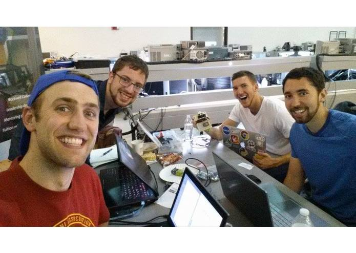

The Occupancy Project
Group 36 - SE 491
Team Members:
Shaun VanWeelden, Sam Ennis, Lee Robinson, Mike Pruszinske
Project Overview
Project Abstract
Recently, homes and offices around the country have been rapidly connecting to the web via the Internet of Things, providing people with previously unknown information that can offer widespread beneficial effects. We want to provide these benefits to Iowa State University as well by making its lecture halls, classrooms, and offices "smart". Our project makes use of IoT data to reveal classroom availability information to both Iowa State students and staff.
Rooms around the university will report their current occupancy status via an occupancy sensor to a user-friendly web application. With this new room occupancy information, students can make informed choices about where to study and meet, and the university can make informed decisions using our application's analytics about classroom usage (room popularity, energy consumption, etc.). Because of Iowa State's continued growth in enrollment, managing classroom usage effectively is more important than ever. The Occupancy Project will help Iowa State get the most out of their current buildings and be at the forefront of smart and sustainable technologies.
Rooms around the university will report their current occupancy status via an occupancy sensor to a user-friendly web application. With this new room occupancy information, students can make informed choices about where to study and meet, and the university can make informed decisions using our application's analytics about classroom usage (room popularity, energy consumption, etc.). Because of Iowa State's continued growth in enrollment, managing classroom usage effectively is more important than ever. The Occupancy Project will help Iowa State get the most out of their current buildings and be at the forefront of smart and sustainable technologies.
Inspiration
As students, we know how difficult it can be to find an open room for a team meeting, group homework session, or some quiet studying. Especially around midterms and finals, it sucks to spend precious study time wandering around campus looking for the right spot. We think we can leverage our skills and the Internet of Things to solve this problem by making Iowa State’s lecture halls, classrooms, and study spots "smart".
What It Does
Using the sensor hardware we built, we will be able to report the current occupancy status of a room to a user-friendly web application. This will be done in real-time, so all students have to do is go to our website, select a building, and we’ll show them the open areas in that part of campus! With this new room occupancy information, students can make informed choices about where to study and meet. As an added bonus, this hardware can also indicate whether the lights in a room are on or off. This allows the university to make informed decisions using analytics from our application about classroom usage, room popularity, energy consumption. Because of Iowa State’s continued growth in enrollment, managing classroom usage effectively is more important than ever. The Occupancy Project will help Iowa State get the most out of their current buildings and be at the forefront of smart and sustainable technologies.
How We Built It
At the core of our hardware, we used an Adafruit HUZZAH ESP8266 breakout WiFi microcontroller to connect to the ISU network and transmit the signals. For occupancy detection we used an IR sensor and photo resistors to determine light status. We used the Arduino IDE and C to program the hardware. On the software end, we used Parse to manage the data received from the hardware and Materialize framework (CSS/JavaScript/HTML) for the front-end.
What's Next For The Occupancy Project?
We think we can make this concept a reality and bring true value to ISU students. Our first goal is to get ECpE department permission to set up our system in rooms throughout Coover Hall as a test environment. Once we show the value of our product on this small scale, we will bring the idea to Student Government and request a wider implementation across campus. In the meantime, we will continue to build out our web application so that it’s intuitive and easy-to-use.
MVP (Minimum Viable Product) Goal:
Make our own device for analyzing room occupancy. It will be able to detect when a room has someone in it and also whether the lights are on or off. We will use WiFi to save activity status online and display the information in a meaningful way via a web application interface. Our goal is to have this MVP completed by the end of Fall semester 2015.
Stretch Goals
Once we have completed our MVP in the Fall, we will spend the Spring semester working on implementing some of our stretch goals.
- - Integrate room occupancy information into the MyState app
- - Be able to toggle classroom lights on and off with device
- - Count the number of individuals in the room/gym/court
- - Live-stream the room
- - Book a room
- - Scale to classrooms around Iowa State University
The Team
Team Roles
Shaun VanWeelden - Team Lead
Sam Ennis - Web Jedi
Lee Robinson - Key Synergy Holder
Mike Pruszinske - Communication Master

Project Reports
Weekly Reports
Content goes here, note that all div's are automatically styled as "display: inline-block" - shouldn't change anything for this content
Connect with Us
Team Emails
Content goes here, note that all div's are automatically styled as "display: inline-block" - shouldn't change anything for this content